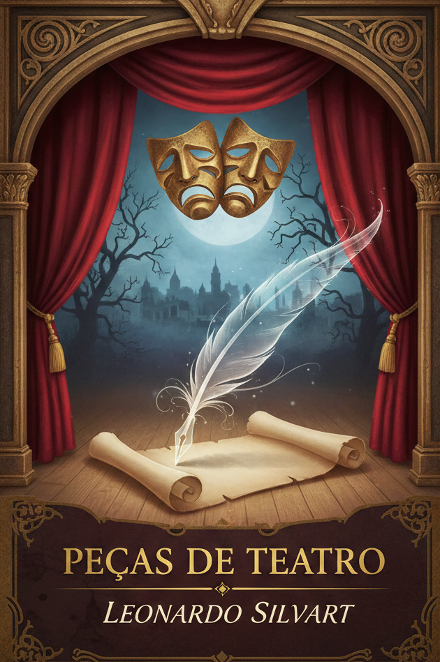
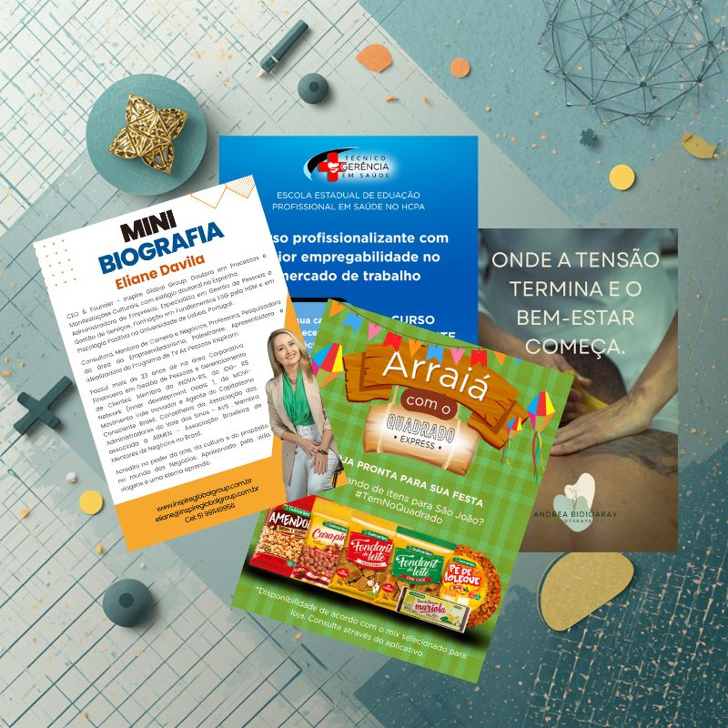
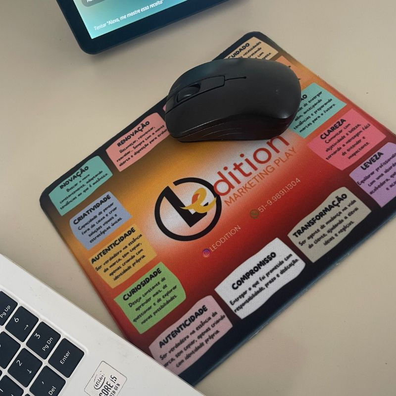
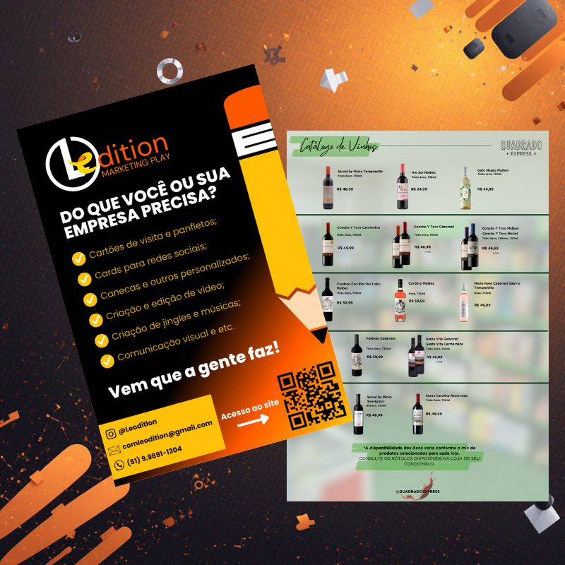
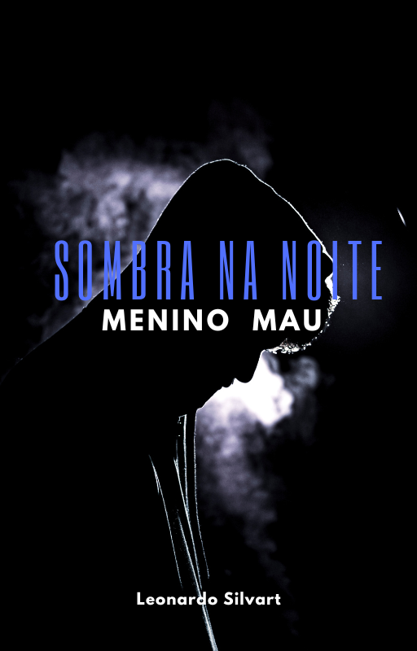
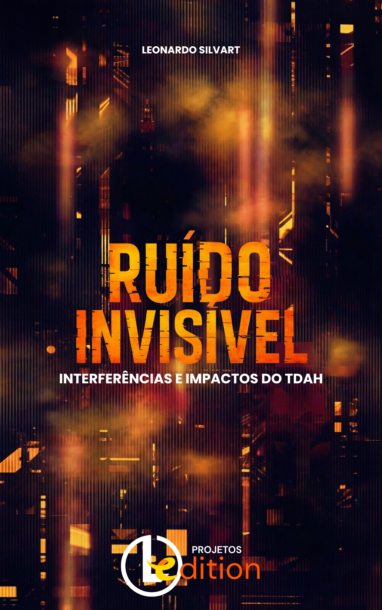

O Mágico de Oz
Adaptação de Leonardo Silvart do clássico de L. Frank Baum, preparada para aproximar a história do público escolar.
Projetos autorais
Além do marketing, a Leodition desenvolve livros, contações de histórias e experiências criativas para diferentes públicos.
Contação de histórias
Apresentações pensadas para escolas e outros espaços educativos, com histórias próprias e adaptações conduzidas por Leonardo Silvart.

Adaptação de Leonardo Silvart do clássico de L. Frank Baum, preparada para aproximar a história do público escolar.

Uma das histórias que integram o repertório de apresentações já desenvolvidas e aplicadas pela Leodition.

Projeto autoral que brinca com narrativa, imaginação e participação do público.

As apresentações podem ser conversadas de acordo com a faixa etária, o espaço e os objetivos da instituição.
Livros em desenvolvimento

Contos independentes conectados por uma atmosfera intensa, humana e provocativa.

Uma obra sensível e direta sobre viver com TDAH, sem romantizar e sem estigmatizar.
Histórias para o público infantil e adolescente que unem criatividade, convivência e reflexão.